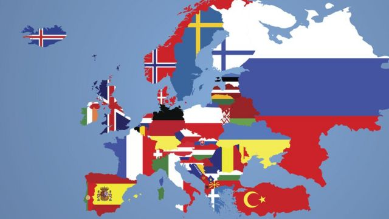

Centro América
América del Sur

África Occidental.
África Oriental.
África Central.
África del Sur.
Islas pequeñas de África.
Asia occidental
Asia occidental

| Continente | Divisiones | Población | Superficie | Imagen |
|---|---|---|---|---|
| América |
Norte América Centro América América del Sur | 1.002 miles de millones (2016) | 42.55 millones de km2 |
|
| Africa | África del Norte. África Occidental. África Oriental. África Central. África del Sur. Islas pequeñas de África. | 1.002 miles de millones (2016) | 42.55 millones de km2 | Europa | Europa | 743 704 000 hab. | 10 530 751 millones de km2 |  |
| Asia | Asia central Asia occidental Asia occidental | 4.561 miles de millones (2018) | 44.58 millones km2 | |
| Oceania | Australia | 25.69 millones (2020) | 7.692 millones km2 | |
| Oceania | Australia | 25.69 millones (2020)Temporalmente 1000-5000 hab | 14.2 millones km2 | |